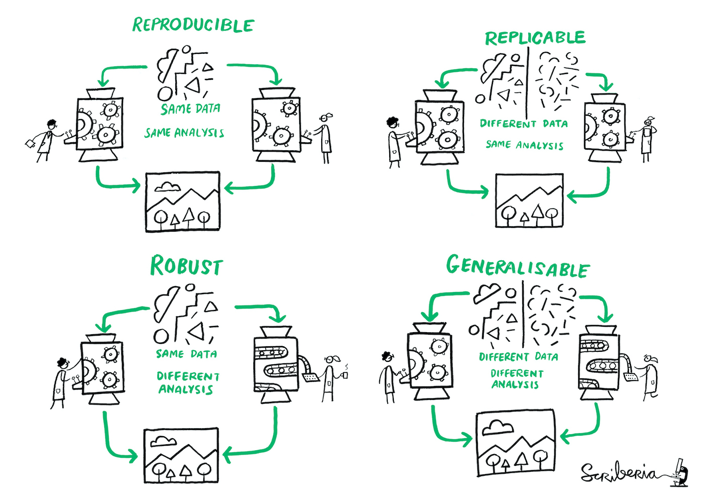
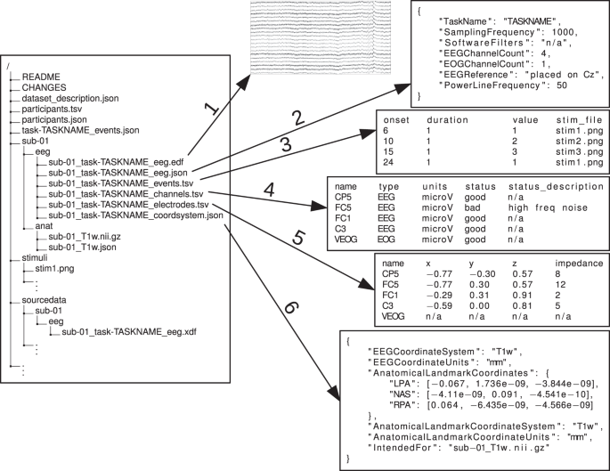
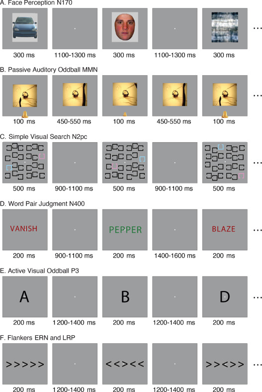

🎯 GOALS
Learning how Open Data can help making research more transparent and sustainable, plus getting an overview over one example of an open EEG dataset (ERP CORE).
2.1 Research we can trust

Figure: The replication crisis in psychology.1
We want (psychological) research findings to be trustworthy
At the very least, other researchers that repeat an experiment or analysis should be able to get the same results

Figure: Terminology for trustworthy research.2
Sharing research data helps to establish reproducibility and robustness
Pre-registering one’s analysis and sharing materials and protocols helps to establish replicability and generalizability
2.2 Open research data
| Advantages of Open Data | Disadvantages of Open Data |
|---|---|
|
|
2.3 Standardizing data
- Brain Imaging Data Standard (BIDS) = a standardized way of organizing neuroimaging (e.g., fMRI, EEG) data for easier sharing and reuse

Figure: Example EEG dataset in BIDS format.3
Folders organized by subjects (
sub-001/,sub-002/, etc.), session (ses-01,ses-02, etc., if applicable) and imaging modality (T1w– structural MRI,func– functional MRI,eeg– EEG recordings, etc.)-
Raw data files (e.g.,
.set/.fdtfor EEG) are accompanied by metadata in.jsonformat- Meta-data contains info about the task, the scanner, etc.
Additional dataset-wide files like
dataset_description.json,participants.tsv,README
2.4 ERP CORE dataset
ERP Compendium of Open Resources and Experiments (ERP CORE)4 = an open dataset with data from six different EEG experiments
Each experiment was optimally designed to elicit a certain ERP component (more on that later)

Figure: Tasks in the ERP CORE dataset.5
40 participants (25 female, 15 male, age 21.5 ± 2.9 years)
30 EEG electrodes (10/20 system) + 3 EOG electrodes (eye movements)
Sampling rate 1024 Hz (= EEG samples per second)
2.5 Downloading data
Manually from the Open Science Framework (https://osf.io/thsqg/) or using the R package
erpcore6-
Start by creating an empty data directory
-
here()function from theherepackage creates relative file paths, hence reproducible on different machines and operating systems
-
(data_dir <- here::here("data/n170"))## [1] "/home/runner/work/eegSeminaR/eegSeminaR/data/n170"
dir.create(data_dir, recursive = TRUE)-
erpcorepackage is still in development → Must be installed from GitHub instead of CRAN
install.packages("remotes")
remotes::install_github("alexenge/erpcore")-
Download the ERP CORE data using
erpcore:component = "n170"to get only the data from the face percetion (N170) experimenttype = "bids"type to get data in BIDS formatOnly download one of the 40 subjects for now
erpcore::get_erpcore(
component = "n170",
dest_path = data_dir,
type = "bids",
subjects = "sub-001"
)✍️ EXERCISE
Open the
data/n170directory in the file explorer and take a look at the different files that were downloaded. Can you figure out the purpose for all of them?
Further reading
Gewin, V. (2016). Data sharing: An open mind on open data. Nature, 529(7584), Article 7584. https://doi.org/10.1038/nj7584-117a
Kathawalla, U.-K., Silverstein, P., & Syed, M. (2021). Easing into Open Science: A guide for graduate students and their advisors. Collabra: Psychology, 7(1). https://doi.org/10.1525/collabra.18684
Pernet, C. R., Appelhoff, S., Gorgolewski, K. J., Flandin, G., Phillips, C., Delorme, A., & Oostenveld, R. (2019). EEG-BIDS, an extension to the Brain Imaging Data Structure for electroencephalography. Scientific Data, 6(1), Article 1. https://doi.org/10.1038/s41597-019-0104-8
Add-on topics
2.6 Version control
For full transparency and reproducibility, we need to share not just our data but also our code
Ideally not just the final version (e.g., upload script on OSF), but the full history
Also helpful for your future self to understand what you did a couple of months ago
-
Version control tools like git are very powerful for this:
Make your project folder a git repository
Write/edit code
Take a snapshot (“commit”) of the code if you’re happy with it
Include a helpful commit message for your future self or collaborators
Try out new stuff while always being able to revert to any previous commit

Figure: Tracking the history of your code using git commits (circles) and branches (arrows)7
Code in git repositories can be shared online on websites like GitHub or GitLab
Details are beyond the scope of this course, but for a great intro see “Happy git with R”8